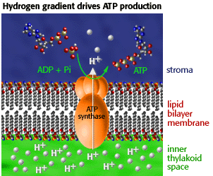
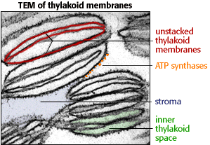

Photosynthesis Problem Set 1
Problem 2 Tutorial: Energy source for ATP formation
The specific energy source for the reaction ADP + phosphateThe role of a hydrogen gradient in ATP synthesis
| During photosynthetic electron transport, protons accumulate at high concentration inside the thylakoid space. The concentration gradient between the inside and outside of the thylakoids is the energy source used by the ATP synthase. Protons pass through a channel of the CF0-CF1 ATP Synthase enzyme. This movement of protons from a region of high concentration (inner thylakoid space) to low concentration (stroma) activates the conversion of ADP and Pi to ATP. |  |
| In the Transmission Electron Micrograph (TEM) to the right, notice the ATP Synthase particles on the stromal surface of thylakoid membrane. Because the membranes are unstacked, the "sac-like" nature of the thylakoids is exaggerated in this photo. The interior of these sacs has a high proton concentration during electron transport. |  |


http://www.biology.arizona.edu
All contents copyright © 1996. All rights reserved.